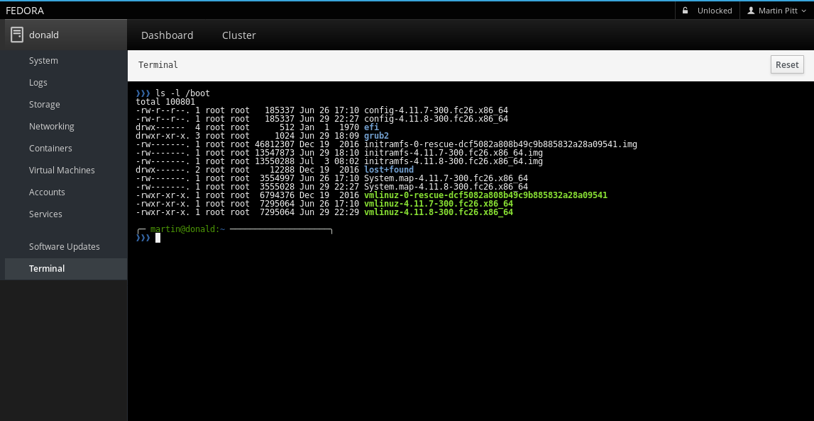
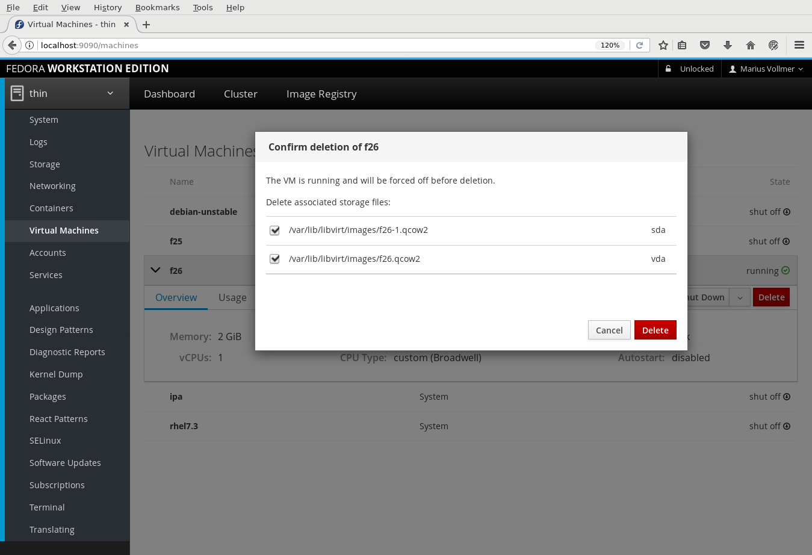
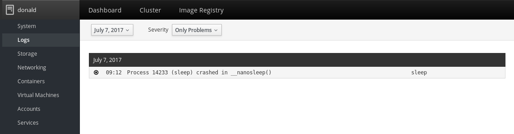
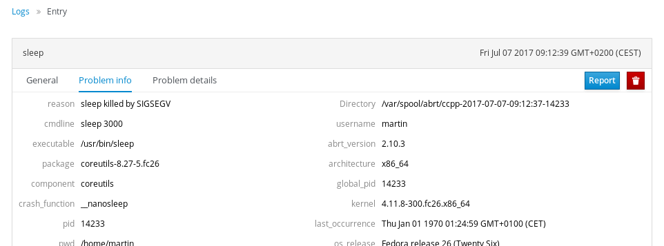
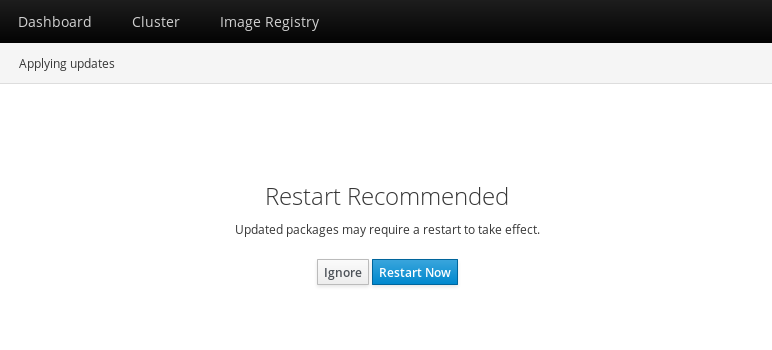

Cockpit is the modern Linux admin interface. We release regularly. Here are the release notes from version 144 and 154.
Terminal size
The Terminal now uses the full window size and dynamically resizes with it. Previously its size was fixed to 80x24 characters.

Machines page reactiveness
The Machines page now listens to libvirt events instead of reading the entire
state of all virtual machines every ten seconds. This makes the page much more
reactive to state changes and reduces the number of calls to virsh.
Delete VM functionality
A “Delete” button/dialog was added to the Machines page. If the VM is still running, it will be force-stopped first. The dialog also offers you the choice to remove the VM’s disk images as well.

Retire external Machines provider API
Cockpit 132 introduced an external API for the Machines page that allowed third party plugins to dynamically add/manage virtual machines from providers other than libvirt. This was found to be not supportable in the long run and thus was discontinued.
ABRT integration
On Fedora 26 the Logs Page now shows Problem reports from the ABRT crash reporting tool. They appear as new message class “Problem” in the journal view, and their details can be visited when clicking on them:


Thanks to Matej Marusak for this feature!
Always recommend restarting after applying Software Updates
Most supported operating systems in Cockpit don’t provide a reliable detection of whether they require restarting the machine after applying updates for them to fully take effect. This particularly affects updates to the kernel, but also restarting services. For now, Cockpit will always recommend to restart the machine after applying updates:

Cancelling Software Updates
The Software Updates page now has a Cancel button that is enabled while it is still safe to abort a running update, i.e. while the updates are still being downloaded.
Try it out
Cockpit 145 is available now: